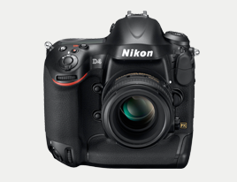

Nikon
Nikon is opgericht in 1917. Ze specialiseren zich in het ontwikkelen van lenzen. Deze worden gebruikt voor microscopen, verrekijkers en natuurlijk fototoestellen. Maar tegenwoordig maken ze ook de camera's zelf.
De lenzen zijn wereldwijd bekend geworden nadat een bekende oorlogs journalist ze gebruikte om foto's te maken van de oorlog in Korea in de jaren 40.
Nikon maakt DSLR camera's voor de consument vanaf begin nieuwe millenium, maar waren daarvoor al samen met Kodak aan het werk voor NASA.
De modellen
Nikon heeft twee product lijnen voor camera's; de D lijn voor DSLR camera's en de CoolPixx lijn voor normale consumenten camera's
- De meest recente Nikkon DSLR camera's zijn de:
- - D800
- - D600
- - D4
De verschillen in deze camera's is de resolutie (mega pixels) en de kwaliteit van de licht opname sensor (CMOS). De D800 is het high-end model, de D600 en D4 volgen in kwaliteit. De beeldprocessor is hetzelfde bij al deze modellen.